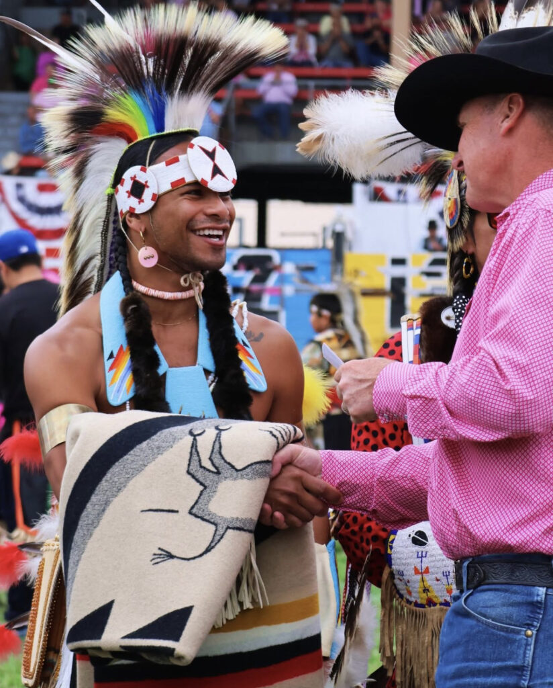
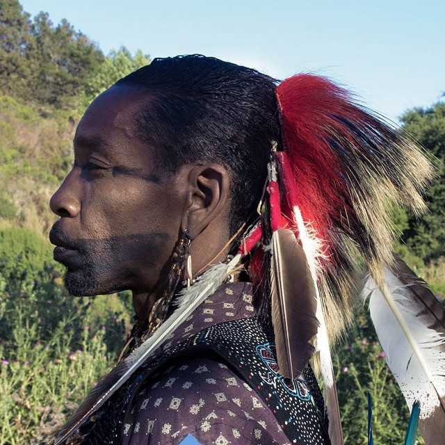

The Search Takes Minutes. The Reclamation Lasts Forever.
The Dawes Final Rolls are digitized, free, and publicly searchable. Here is exactly how to find your ancestors, read what the clerks wrote, and begin the work of re-identifying as who you truly are.

Seven Steps to Finding Your Ancestors
-
Gather the family knowledge first
Before you open a database, open the conversation. Talk to your elders. Collect full names — including maiden names and variant spellings — birthplaces, and family stories that point to Oklahoma or Indian Territory. Your target: a direct ancestor who was living in Indian Territory between 1898 and 1914, the Dawes enrollment window.
Oral history is evidence. The stories your grandmother told about “Indian blood” were not myths — they were memory surviving the paperwork. Write them down.
-
Search the Dawes Final Rolls — free
Go to the Oklahoma Historical Society's Dawes search at okhistory.org/research/dawes. Enter your ancestor's first and last name and select the tribal nation if known (Cherokee, Choctaw, Chickasaw, Muscogee/Creek, or Seminole). Search married women under their married names. Try variant spellings — clerks wrote what they heard.
-
Pull the enrollment card
Each match leads to an enrollment card (census card) listing the roll number, names of everyone in the household, ages, relationships, and tribal enrollment of the parents. Freedmen cards carry additional fields — “slave of,” “father's owner,” “mother's owner” — that, painful as they are to read, are precious genealogical links back another generation.
-
Order the full application packet
The card is the index — the application packet is the treasure. Packets can run from one page to over one hundred, containing sworn interviews, birth and marriage affidavits, and testimony about parentage and tribal ties. This is where Native ancestry hidden behind a “Freedmen” label most often surfaces. Order copies through the OHS Research Center, or view them on Fold3.com and Ancestry.com.
Key truth: a Freedmen listing does not mean your ancestor had no Native blood. Having a once-enslaved parent often put applicants on the Freedmen roll no matter what their ties were to an Indian parent. Always read the full packet.
-
Cross-reference the National Archives
Verify and deepen your findings with the National Archives' Dawes records: microfilm M1186 (enrollment cards), M1301 (application jackets), and T529 (the Final Rolls), held at the National Archives at Fort Worth. Also check the earlier and parallel rolls — the Wallace Roll and Kern-Clifton Roll (Cherokee Freedmen, 1889–1897), the Guion Miller Roll (Eastern Cherokee, 1906–1911), and the Baker Roll (Eastern Band Cherokee, 1924–1928).
-
Build your documented lineage
Connect yourself to your Dawes-era ancestor generation by generation with birth, marriage, and death certificates. This documented chain is the foundation of your self-identification — your family's corrected record, assembled by your own hands. Keep originals safe; work from certified copies.
-
Self-identify — and contact us
This is the step that matters most, and it belongs entirely to you. Self-identify as Indigenous on the census and on official records going forward — the U.S. Census race question is answered by self-identification, and it is your right to mark American Indian and name your people. Correct the misnomers on your forms. Connect with descendant communities. Raise children who know exactly who they are. The 1st Nation Foundation provides guidance for every stage of this journey — reach out and tell us where you are in yours.
Self-Identification Comes First — and Stands on Its Own
Let us be clear about what this site is, and what it is not. This site is about self-identification — first and foremost. Tribal enrollment, citizenship, and eligibility are a separate and distinctly different matter, governed by each nation's own laws, and they are beyond the scope of this site. We make no assertions about tribal acceptance or recognition. What we assert is this: how you identify is yours to decide, and the historical record supports you.
Remember also that recognition status does not define Indigenous identity. Many tribes exist that are not federally recognized. Some hold state recognition only. Others hold no formal recognition at all — and their people are still identified as Indigenous, still counted as American Indian on official census records, still who they have always been. A federal acknowledgment list is a bureaucratic instrument; it is not the measure of a people.
The U.S. Census has confirmed it for decades: the race question is answered by self-identification. No enrollment card is required to mark American Indian and name your people. Reclaiming that box — after generations of clerks checked the wrong one for your family — is itself the act of correction. It is the critical first step in any process that may follow, and it is a step no one can take for you and no one can take from you.

Your Research Checklist
Walk in prepared. To search effectively you will want:
- ◆ Full names of ancestors (with maiden names and variant spellings)
- ◆ Approximate birth years and family relationships
- ◆ Any connection to Oklahoma / Indian Territory, 1898–1914
- ◆ The tribal nation, if family memory preserves it
- ◆ Family documents: Bibles, obituaries, letters, photographs
- ◆ Patience and persistence — the record keepers misspelled, but they recorded
Need help reading what you find?
Enrollment cards, application packets, conflicting rolls — the records can be dense. The 1st Nation Foundation offers guidance to descendants at every stage: starting the search, interpreting the documents, and taking the steps to re-identify appropriately.